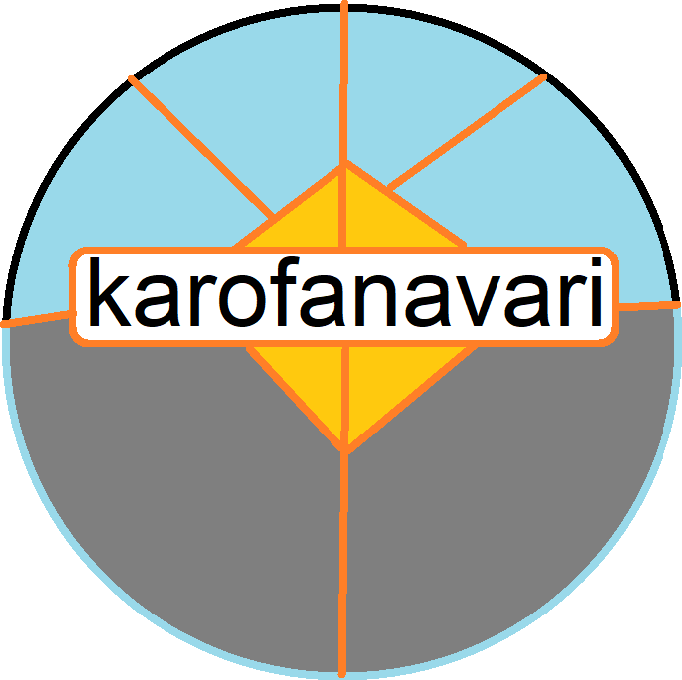

پروژه ی کار و فناوری ماهان اصغری
این پروژه ای برای درس کار و فناوری است
این دکمه یک کس شانسی در دنیا را نتخاب میکند و باعث عطسه ی فرد انتخاب شده میشد
این بهترین چیز راجع به این پروژه است، اما هنوز در حال لود شدن است.
World Map
➤ روی نقطه های مختلف روی نقشه کلیک کنید تا راجع بهشان چیز های جدیدی یاد بگیرید